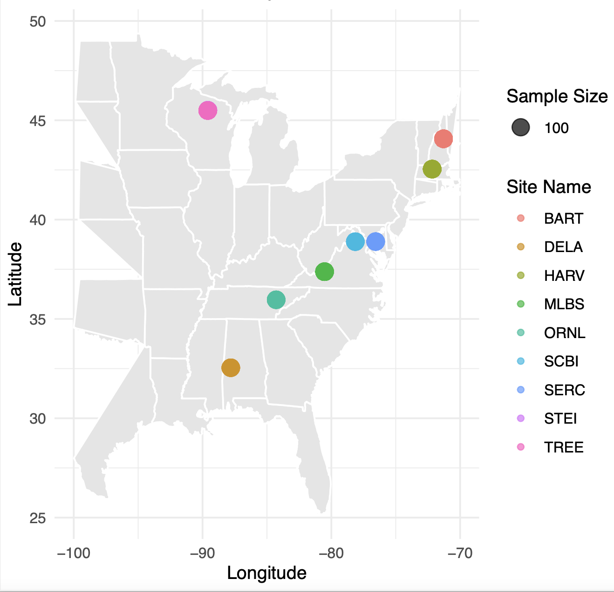
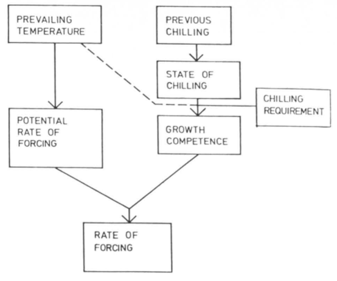
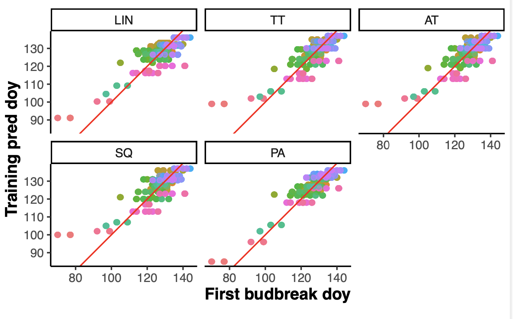
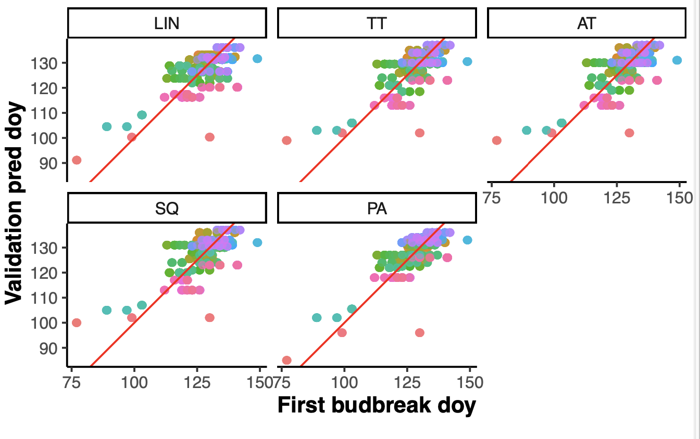
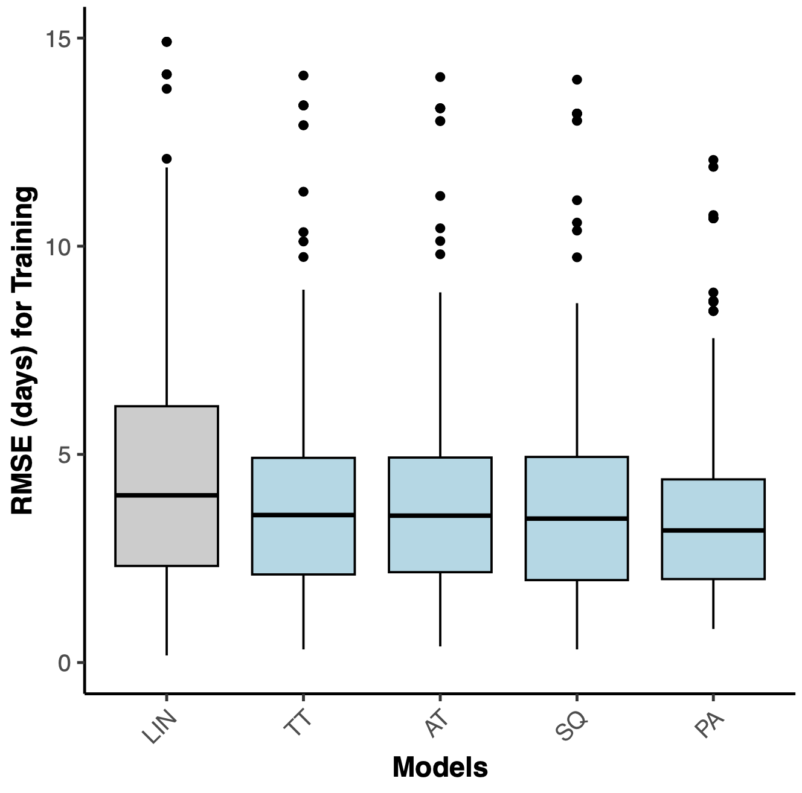
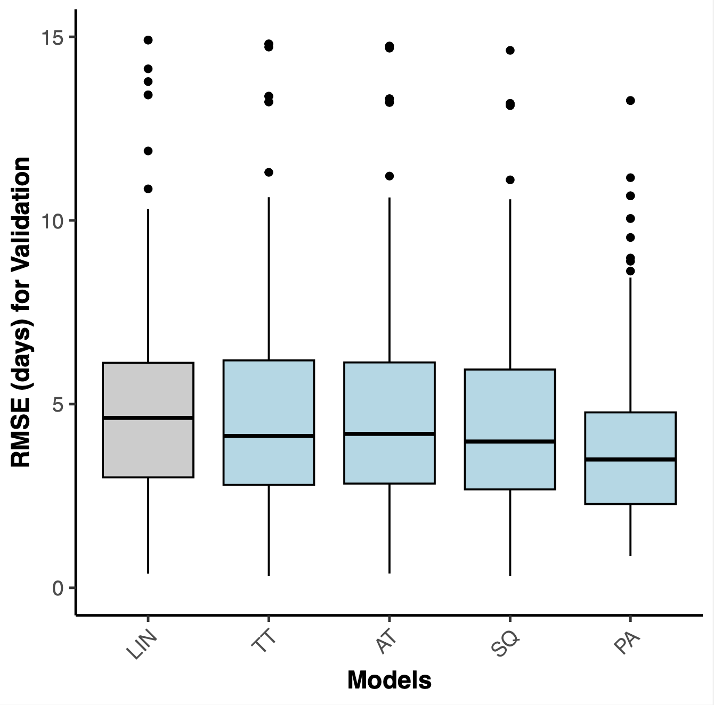
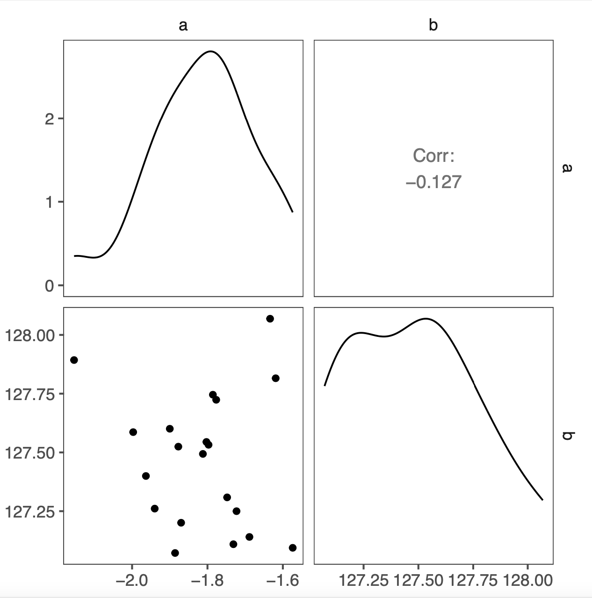

Comparing statistical and process-based models for forecasting plant phenology
Yiluan Song
,
Ziyu Zhou,
Kai Zhu
Ziyu Zhou was a 2021 cohort undergraduate student at the University of Michigan, now a Master's student at Duke University.
Manuscript in Preparation
Code
Highlights
We predicted the time of budburst of red oak across NEON sites with four process-based phenological models and a linear regression model.
Process-based models demonstrated higher in-sample and out-of-sample accuracy in short-term predictions.
Inferred parameters in process-based models had significant correlation, suggesting parameter identifiability issues.
Data and models

NEON sites with phenological observations of red maple.

Diagram of the parallel model, one of the four process-based models used in this study (
Hänninen, 1990
).
Predictive skills

Relationship between observed and predicted first doy for budbreak (in sample).

Relationship between observed and predicted first doy for budbreak (out of sample).

RMSE of predicted first doy for budbreak (in sample).

RMSE of predicted first doy for budbreak (out of sample).
Parameter identifiability

Correlation matrix of inferred parameters in the linear regression model.
Correlation matrix of inferred parameters in the parallel model, one of the four process-based models used in this study.
Home